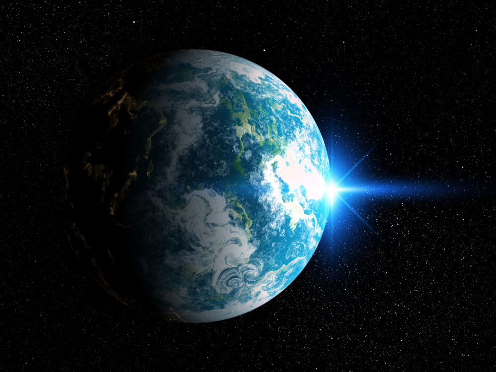

Simulação de parâmetros solares para EPS Cubesat
Trabalho de conclusão de curso (TCC)
Alessandro Ferreira de Santiago
Maria Cristina Tessari-Zampieri
Weder Fabricio Lopes
Introdução
- 1) Os cálculos são feitos com base na altitude de órbita circular
- 2) Serão utilizadas algumas fórmulas do capítulo de metodologia para apresentação dos resultados
- 3) Os resultados serão apresentados ao final da página
Instruções - como utilizar
- 1) Insira o parâmetro altitude de órbita circular
- 2) O sistema te dará uma slider com controle exatamente dentro do range estabelecido, com uma simulação virtual do que está ocorrendo, valores e visualização por imagem
- 3) A partir desse controle você pode alterar o valor e ver todos os outros parâmetros variando
Na prática!

Resultados
| Altitude do satélite informada | 0 |
|---|---|
| Semi-eixo maior da órbita do satelite | 0 |
| Período orbital | 0 |
| Velocidade angular | 0 |
| Inclinação orbital | 0 |
| Porcentagem de exposição sob luz solar | 0 |